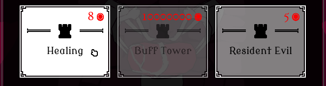

UI/UX DESIGN
MY UI WORKFLOW
1. PLAN & RESEARCH
I outline what UI will be necessary, in what contexts, prioritizing its importance. I study other games with similar mechanics and make user stories.
2. MOCKUP
Either done on paper or in Figma. The mockup helps showcase my vision and allows me to get feedback early on.
3. IMPLEMENTATION
I recreate the mockup in engine, focusing on making it functional. The mockup helps inform the structure of the widgets and what content I'll need.
SHOP MENU
FEATURE BRIEF
The shop needed to display 5 upgrade cards. The shop has a randomness to what cards get displayed. There should be a reroll feature to reroll the shops selection. A feature to lock/ unlock individual cards so the player has the option to not reroll locked cards. The player should also be able to see their current stats and purchased upgrades to informed choices.
ORIGINAL MOCKUP
For the upgrade cards I had a lot of references to go from. The main inspirations were Brotato and Soulstone Survivor for their layouts.
DIFFICULTIES:
Had issues with the placement of player information, such as their weapon(s), stats and upgrades.
I ended up dissatisfied with what I came up with but knew I didn't have the time to fix it.
The main issues I have with it is that there's too much packed information that takes up a third of the screen.
It feels overwhelming and doesn’t look clean.


REIMAGINED MOCKUP
Taken time away from the project, I tried tackling the main issues I had with the original layout.
SOLUTIONS:
To solve how crowded it felt I moved information into tool tips, only keeping the icons for the weapon and upgrades.
This gives a lot more space and allows me to make the container shorter. The icons could potentially be made even smaller if needed.
I also moved the active heart up to the top of the screen, as it was oddly placed with the upgrades prior.
CARD ANIMATION
For the purchase animation, I made the card spin by decreasing the widgets render transform x scale and the y shear simultaneously.
Simple but effective and looks convincingly 3D!

SHOP MENU INGAME
BUILD MENU
FEATURE BRIEF
The build menu should display all the structures and information about them, such as name, description, cost. The players currency balance should also be present.

MOCKUP
The game has 3 structure types: offence, defence and support.
Each structure type has 3 structures, making a total of 9 structures.
I designed a menu with three tabs corresponding to the structure types and three structure cards.
The structure cards content update to fit the active tab.
Hovering over the card will show a window with more details about the structure.
BUILD MENU INGAME
PLAYTEST FEEDBACK
1. HOLD TO PURCHASE
Gives the player a chance to cancel purchase.
Confused players at first but they quickly adapted without outside prompting.
When asked if they’d preferred not having the feature, most said no and that they like it.
Feedback on shortening the hold time requirement so it went faster.
The feature could also be a settings option, so the player gets the final say.

2. TAB BUTTONS
Play testers frequently missed the tab buttons.
Same design is used in the class select menu but not the same issue. Difference is it has a Header text right under the buttons.
I’d be curious to see if adding that to the build's menu would help alleviate the problem. Otherwise, I’d work on clarifying the tab buttons visual language to more clearly communicate to the player that they are in fact buttons.
(Build menu tab buttons)

(Select menu tab buttons)
3. CURRENCY TEXT COLOR
The red color for the currency text gave play testers the impression that an item they could afford wasn't purchasable. From a UX standpoint red is used to communicate an error or lack of resources in this context.
Knowing this I made a visual distinction between elements when an element can’t be afforded by lowering the opacity.
Unfortunately, this distinction isn't there when all the elements can be afforded, leading to the assumption that you can’t purchase it. I should have done a better job communicating this visually or picked a more conventional color for better UX.
SELECTION MENU
FEATURE BRIEF
At the start of the game the player wants to pick their playstyle by selecting modifiers and class. The menu should display all the available choices with relevant information so the player can make informed decisions.

FIRST ITERATION
The select menu does not have a mockup. It was made in engine by taking standards I’d made for the earlier menus.
MAIN MENU SEPARATION
For the final version of the game the main menu was separated out from the selection menu and put in its own level.
This made map selection and restarting a level a lot simpler.
The layout was also changed to be horizontal instead of vertical, inspired by the menus in Thronefall. I setup a quick scene to use as backdrop and added a title.

FINAL VERSION
In total I made 10 different Heart types, but to fit them all I had to update the design of the Heart select cards.
I simplified the cards design by moving the description information into tooltips.
The Quick play button was added to speedup getting into game, useful when debugging.
It picks all the default options, skipping the selection process getting you into the game with one click.
Ironically the best feature I made, by skipping the other stuff I made.
HEALTHBAR & DAMAGE NUMBERS JUICE

CUTSCENE
I've experience doing a visual novel style game in Unreal Engine, so I repurposed some of that code to work for a cutscene.
The cutscene widget takes two arrays of the same length, one for images (texture2D) and one for string.
The widget goes through the arrays, changing the image and displaying the string with a typing effect.
When the full string is displayed there's a short delay before automatically continuing to the next element.
The player can click to continue the story quicker.
To handle this input, I made an invisible button that covers the entire screen.